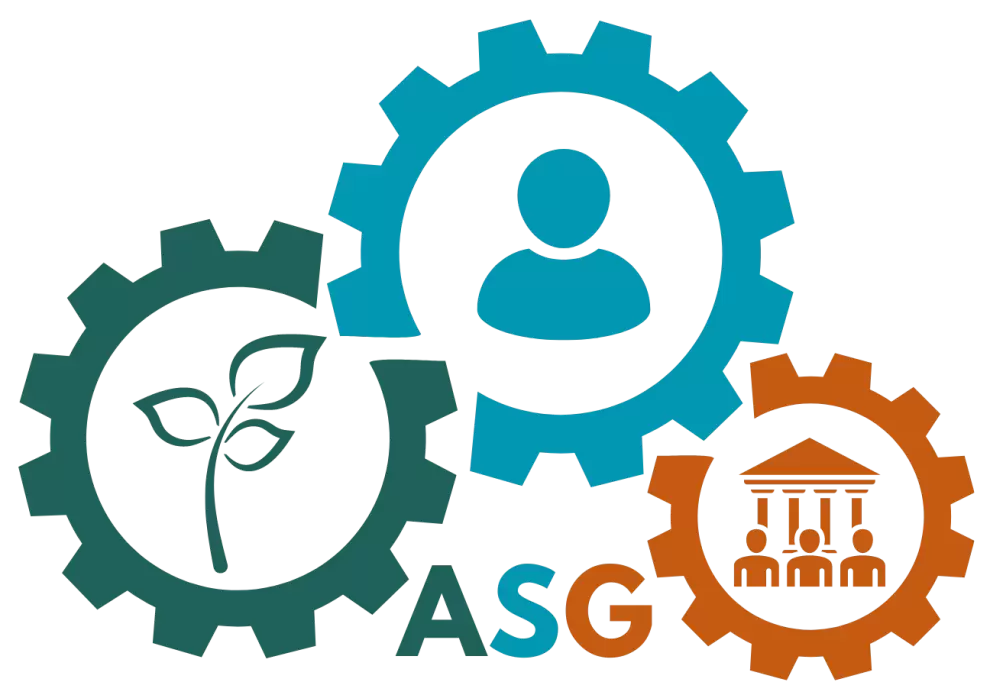

El enfoque ASG se basa en integrar criterios ambientales, sociales y de buena gobernanza en la gestión empresarial, con el objetivo de lograr un desarrollo económico responsable y sostenible.
El diseño y la producción sostenibles apuestan por modelos como la economía circular y el ecodiseño, que fomentan la reutilización de materiales, la reducción de residuos y el reciclaje a lo largo de todo el ciclo de vida del producto, disminuyendo así el consumo de recursos naturales.
Las empresas pueden implementar modelos de producción sostenibles mediante la economía circular, que promueve la reutilización de materiales y la reducción de residuos, y el ecodiseño, que garantiza productos duraderos y reciclables. Además, fomentar el reciclaje interno y optimizar el uso de recursos contribuye a disminuir significativamente la huella ambiental de la empresa.
Existen certificaciones que reconocen las buenas prácticas ambientales y sociales de las empresas. Entre ellas, ISO 14001 garantiza la gestión ambiental, EMAS promueve la mejora continua y la transparencia, y Fair Trade avala un comercio justo y responsable.

Los ODS son metas globales que buscan proteger el planeta y mejorar la calidad de vida de las personas. Cada ciudadano puede contribuir mediante acciones cotidianas como ahorrar agua y energía, separar correctamente los residuos y consumir productos locales y responsables.
Para disminuir la huella de carbono individual, se recomienda utilizar transporte público o bicicleta, reducir el consumo de plásticos de un solo uso, practicar compostaje de residuos orgánicos y mejorar la eficiencia energética en el hogar. Estas pequeñas acciones sumadas tienen un gran impacto en la sostenibilidad de la ciudad.

El Ayuntamiento ofrece diversos programas para facilitar la adopción de hábitos sostenibles, como subvenciones para eficiencia energética, puntos de recogida selectiva de residuos y talleres educativos sobre sostenibilidad. Participar en estas iniciativas permite a los ciudadanos contribuir activamente al cuidado del medio ambiente.